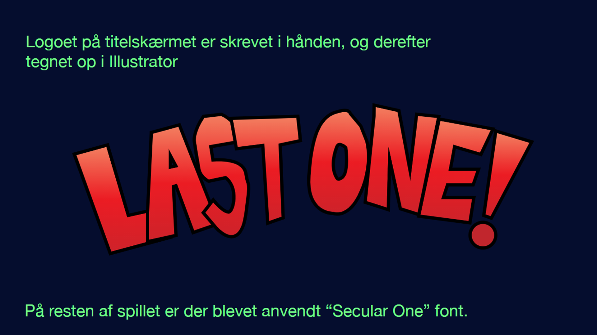
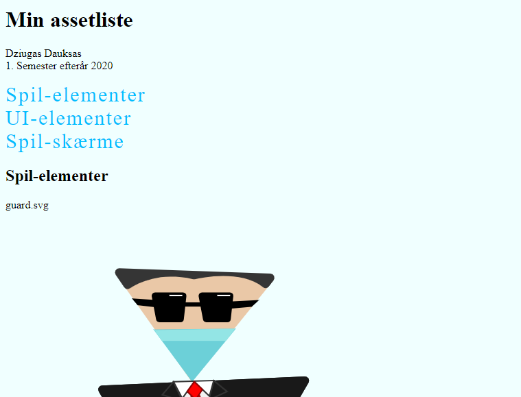
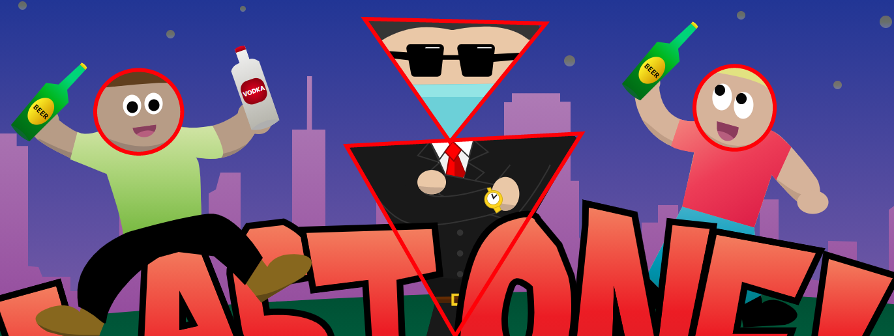

Assetliste og designdokumentation

(Du kommer ind på opgaven vet at trykke på billedet ovenover)
Opgave: 04.01.05 - Assetliste og designdokumentation
Værktøjer: HTML / CSS / Adobe Illustrator
Projekt type: Kodning / Design / Styletile
I tema 4 lærte vi bl.a. at anvende og dokumentere centrale processer i design og udvikling af digitale medieproduktioner. I præcis denne opgave skulle lave en assetliste og designdokumentation af spillet, hvor vi kunne præsentere selve ideen, spillet, stil-inspirationen, farver, UI elementer mv. Jeg valgte at lave en meget simpel webside til assetlisten, så man kan nemt skabe overblik over de forskellige assets. Jeg har dermed lavet en navigations-bar i HTML og CSS vha. "nav" tag for at gøre det mere overskueligt. Når det kommer til mine spil figurer har jeg tegnet dem op således, så den onde figur består af trekantet linjer, for at understrege det onde og uro. De gode figurer består af mere runde former, dette hjælper brugeren med at identificere sig mellem det gode og onde. I designdokumentationen har jeg lavet en udvidet style-tile hvor jeg præsenterede spillet og spil-inspiration via et pitch, herved kan modtageren se hvor ideen af spillet stammer fra og hvad det går ud på. Derudover vises titel, slutskærme, farver via en colorpallete, typografi og UI-Elementer, så modtageren kan få et udkast af spil designet og derefter vurdere om der er noget der skal laves om på eller komme med helt nye løsninger.
Navigationen i assetlisten

Former af de gode og onde figurer
